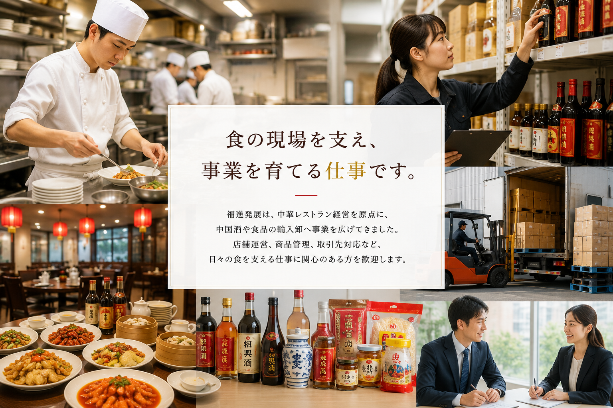

食の現場を支え、事業を育てる仕事です。
福進発展は、中華レストラン経営を原点に、中国酒や食品の輸入卸へ事業を広げてきました。店舗運営、商品管理、取引先対応など、日々の食を支える仕事に関心のある方を歓迎します。
採用情報
レストラン運営、輸入卸、商品管理など、食の事業を支える仲間を募集しています。
福進発展は、中華レストラン経営を原点に、中国酒や食品の輸入卸へ事業を広げてきました。店舗運営、商品管理、取引先対応など、日々の食を支える仕事に関心のある方を歓迎します。

店舗運営や商品供給など、食の現場に近い環境で仕事に取り組めます。
レストラン経営、酒類輸入卸、食品輸入卸など、複数の事業に関わる機会があります。
1995年の設立以来、食に関わる事業を継続して展開しています。
現在の募集状況や募集職種については、お問い合わせください。
店舗運営、商品管理、事務業務など、事業内容に応じて採用を行う場合があります。
採用情報に関するお問い合わせは、電話またはメールにてご連絡ください。